Conseiller
Auditer les processus, cartographier ce qui est automatisable, et dire non quand l'IA n'est pas la réponse.
Développeur Fullstack & Expert en Intégration IA
>_
Développeur fullstack, à fond dans l'intégration de l'IA.
Nom :Bastien Nieto
Profil :Fullstack & Intégration IA
Email :bastien.nieto.pro@gmail.com
Spot :Côte d'Azur (83)
Télécharger mon CVDéveloppeur fullstack passé par trois ans d'alternance en entreprise, je construis et fais évoluer des applis web et mobiles en production (PHP/Symfony, Node.js, Java/Kotlin).
Du backend (API, bases de données, admin système) au frontend (UI/UX, intégration), je touche à toute la chaîne — et j'aime que ça parte en prod proprement.
Ma vraie passion : l'intégration de l'IA. J'orchestre des systèmes multi-agents, je fine-tune des modèles (LoRA) et je branche des LLM dans des produits concrets.
⚡ Hors du code : Formule 1, belles mécaniques et beaucoup (trop) de café.
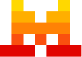
Mistral Ollama Qwen · LoRAMon parcours, mes expériences et mes compétences clés.
École d'ingénieurs · 1re année
IUT de Sophia Antipolis
Cycle préparatoire intégré
Mention Bien
Valiance, Sophia Antipolis
Découverte du monde pro et des métiers techniques et de gestion.
Projets réalisés
Technologies
Années de code
Agents dans Aegis
L'étape d'après, et le fil qui relie tout le reste de cette page.
Mon objectif n'est pas de rester à intégrer l'IA des autres : je veux monter ma propre entreprise, à mon nom, et vendre aux entreprises ce que je sais faire de mieux — installer de l'IA locale et souveraine directement chez elles. Aujourd'hui, une société qui veut de l'IA n'a en pratique qu'une seule porte d'entrée : envoyer ses données chez un fournisseur étranger, payer au token, et ne jamais vraiment savoir où ses documents atterrissent ni ce qu'ils entraînent. Je veux ouvrir l'autre porte. D'abord le conseil — venir regarder ce qu'il y a réellement dans leurs processus, et leur dire honnêtement ce que l'IA peut faire chez eux, ce qu'elle ne fera pas, et ce que ça coûte pour de vrai. Ensuite la construction — entraîner et fine-tuner les modèles sur leurs données à elles, les déployer sur leurs machines à elles, puis repartir en laissant leurs équipes capables de s'en servir sans moi. Le tout dans les clous du RGPD, pas comme une case cochée en fin de projet, mais comme la contrainte de départ qui décide de l'architecture. C'est exactement le fil qui relie tout ce qu'il y a sur cette page : Aegis tourne sans une seule API, Nano tourne dans votre navigateur et pas sur mon serveur, Cerber n'existe que pour empêcher des données de fuir. Je ne vendrai pas une techno parce qu'elle est à la mode — je vendrai la seule façon de faire que je pratique déjà, tous les jours, sur mes propres projets.
En parler avec moiAuditer les processus, cartographier ce qui est automatisable, et dire non quand l'IA n'est pas la réponse.
Fine-tuner des modèles sur les données de l'entreprise, et les faire tourner sur son infrastructure à elle.
RGPD posé comme contrainte d'architecture dès le premier schéma, pas comme une case cochée à la fin.
Trois projets au long cours, dix projets aboutis, et les travaux d'école qui m'ont appris le métier.
Ceux sur lesquels je travaille depuis des mois, et qui disent le mieux comment je bosse.
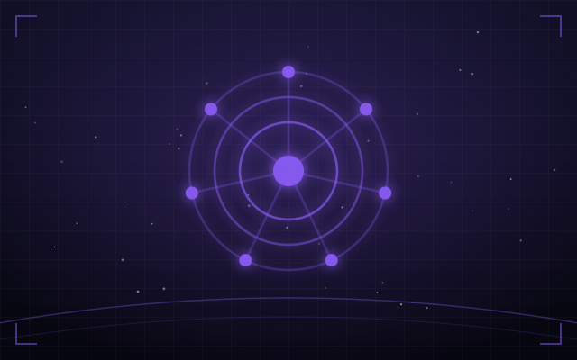
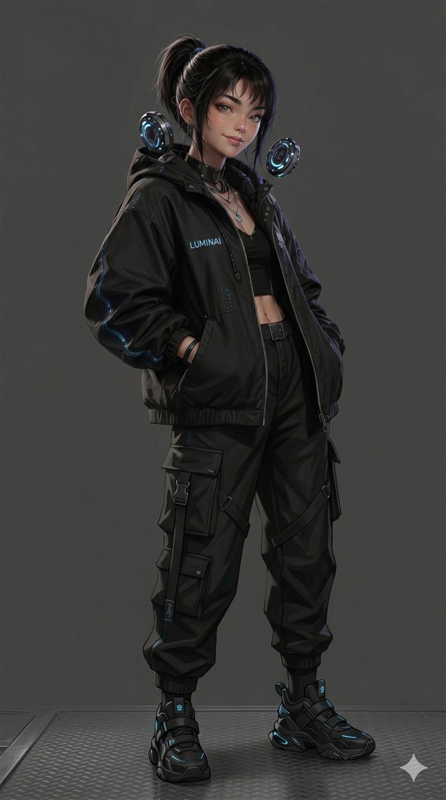
EN DÉVELOPPEMENT// de loin le plus gros projet de ma vie
Aegis (nom de code « Luminai ») est une IA quasi-humaine qui tourne 100 % en local, sans aucune API. Son « Mind » est un Qwen2.5 que j'ai fine-tuné moi-même en LoRA, orchestré par une architecture multi-agents — chat, pensée, monologue intérieur, mémoire hiérarchique, émotions, vision et jeu. Concrètement, elle perçoit, décide et agit seule : elle joue à Pokémon en autonomie totale et discute en direct sur Twitch.
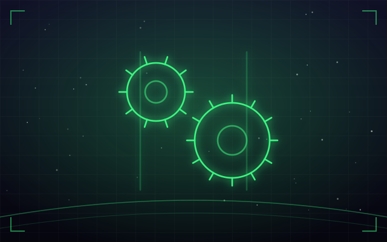
EN DÉVELOPPEMENT// je dirige, l'IA exécute
Un FPS de mouvement nerveux sous Godot, dont je n'ai pas écrit une seule ligne à la main : tout le code, les shaders et les outils sont produits par des agents IA que je pilote. Ce qui est à moi, c'est tout le reste — l'architecture, l'univers, le game design, et surtout l'arbitrage permanent de ce qui est acceptable ou non.
// spécifié avant d'être codé
Cerber est l'outil que je veux pour moi-même : un garde-fou posé entre ma machine et tout ce qui essaie d'en faire sortir mon identité. Soyons clairs sur l'état des lieux — ce n'est pas encore du code. C'est une architecture complète, six modules spécifiés et un périmètre écrit noir sur blanc. Sur un outil de vie privée, se tromper de périmètre coûte bien plus cher que se tromper de langage : je pose donc le cahier des charges d'abord, et je le montre tel quel plutôt que de faire passer une intention pour un produit.
Finis, jouables ou en production. Clique sur une carte pour voir le détail et les vraies captures.
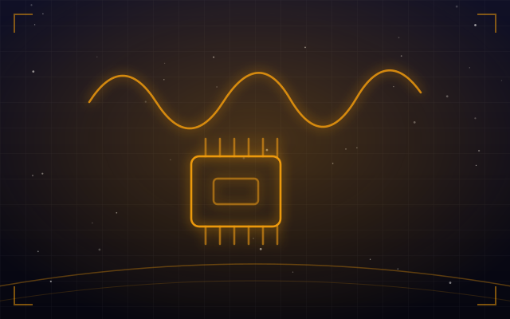
IA · EMBARQUÉCapture et nettoyage de datasets de mouvements, entraînement d'un modèle TinyML avec Edge Impulse, puis inférence directement sur Arduino — du capteur au modèle qui tourne sur microcontrôleur.
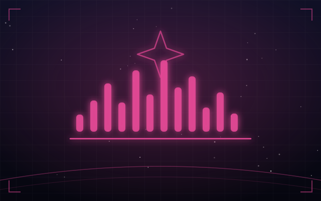
JEU · RYTHMEJeu de rythme web ultra-stylisé où tu forges tes armes au rythme de la musique : détection des temps, système de combos et feedback nerveux — le tout en néon, pensé pour être satisfaisant à jouer.
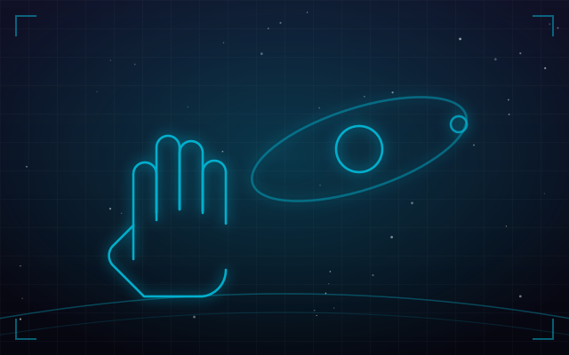
WEB · VISIONSystème solaire 3D entièrement piloté à la main : la computer vision suit tes gestes pour naviguer, zoomer et explorer les planètes, sans clavier ni souris.
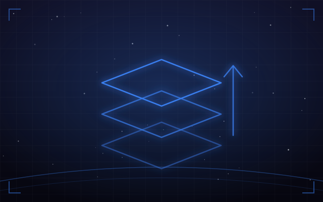
WEB · ERPMigration d'un ERP legacy de Symfony 1.4 jusqu'à 7, par étapes (1.4 → 4 → 7) avec des ponts hybrides faisant cohabiter ancien et nouveau code en production — sans tout casser d'un coup.
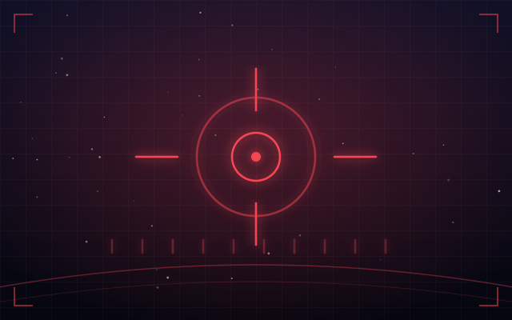
TACTIQUE · APIGénérateur tactique exploitant l'API Valorant : roulette d'agents/armes avec bans, mode Nuzlocke (permadeath) persistant et mini-jeux intégrés (Reflexes, Gridshot, Defuse).
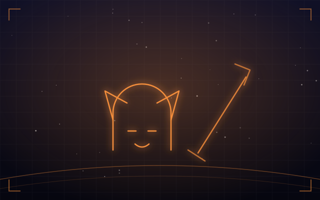
JEU · JAVAAction-RPG narratif en Java : architecture de jeu complète, IA d'ennemis, système de combat et rendu — un vrai moteur maison plutôt qu'un assemblage.
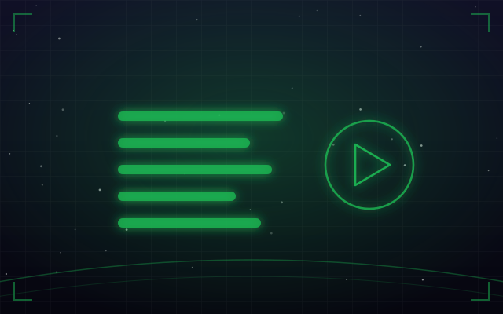
MOBILE · AUDIOApplication mobile de lecture musicale : playlists, lecteur audio et intégration d'une API externe.
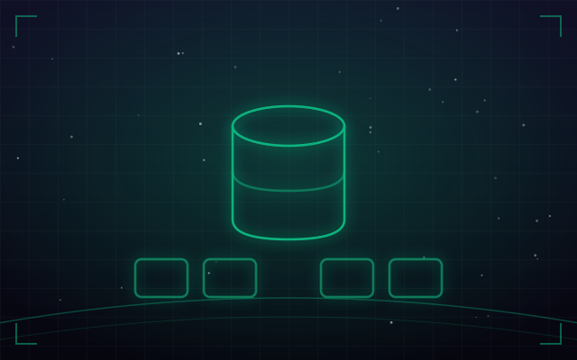
WEB · DOCKERStack MongoDB 7 et Mongo Express conteneurisée, avec des scripts d'import automatisés pour repartir d'un jeu de données propre en une commande.
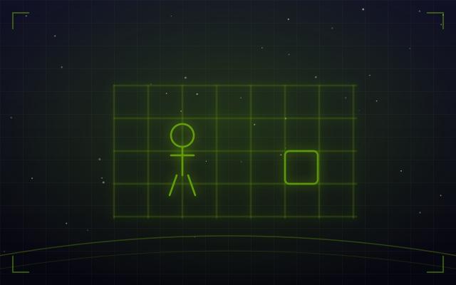
JEU · CJeu de survie tactique en console C : 1 à 4 zombies dotés d'algorithmes de traque active, sur des cartes réelles. Sauvegarde locale.
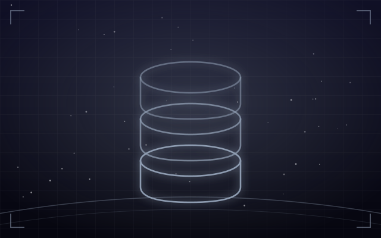
DONNÉES · DOCKERGestion et structuration d'une base de données Steam sous Docker.
Les travaux d'école et les premiers projets. Ils ne me représentent plus, mais ils m'ont appris à coder — et le tout premier date de 2018.
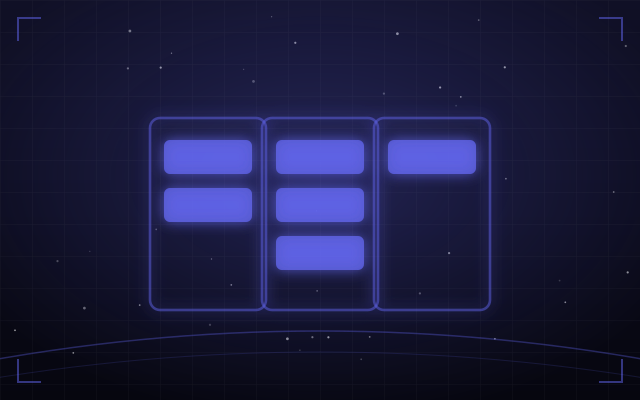
Appli de gestion en architecture MVC : MySQL, interface, tests pytest, doc Sphinx et CI GitLab.
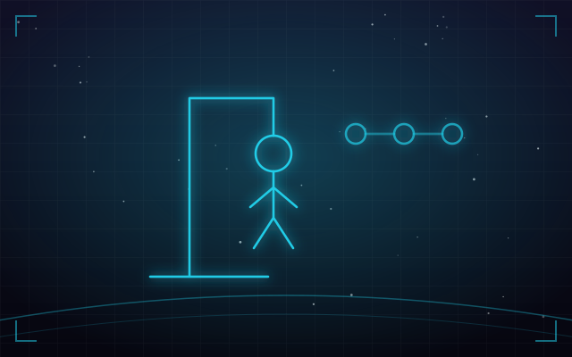
Jeu web classique encapsulé dans un conteneur Docker et déployé automatiquement via une pipeline GitLab CI/CD.
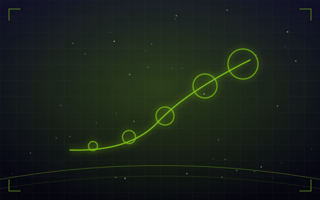
Idle game web (HTML/CSS/JS) avec progression et sauvegarde locale.
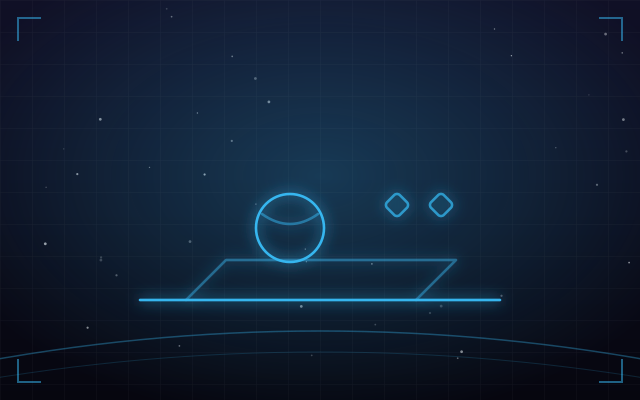
Mini-jeu Unity, scripts C#, collisions et score.
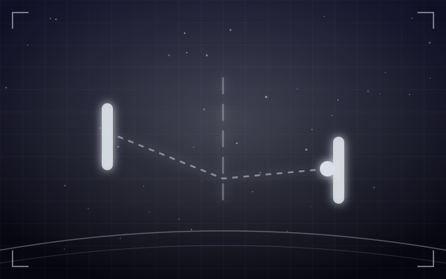
Reproduction de Pong en Python. Mon tout premier projet.
Huit sites, et surtout huit formats qui n'ont rien à voir entre eux : une boutique avec panier, un tableau de bord applicatif, un configurateur de produit, un moteur de réservation, un moteur de recherche d'annonces, un planning de cours, une revue en ligne et un parcours de qualification. Aucune base commune, aucune librairie — ouvre-les et sers-t'en.
Ce sont des démonstrations que j'ai conçues et codées de A à Z, sans aucune librairie. Les marques, les textes, les prix et les disponibilités sont inventés — aucune de ces entreprises n'existe.
Vitrine éditoriale doublée d'un moteur de réservation : couverts, jour, service, créneaux réellement disponibles, salle ou terrasse, puis confirmation.
Le planning de la salle, pas sa plaquette : grille hebdomadaire, filtres par discipline, places qui décrémentent, liste d'attente quand c'est complet.
Un parcours de qualification en quatre étapes : il oriente le dossier vers le bon associé, motive une fourchette d'honoraires et pose le rendez-vous.
Une vraie boutique : filtres, tailles en rupture, panier latéral avec quantités, seuil de livraison offerte et tunnel de commande en trois étapes.
L'intérieur du logiciel : KPI, graphes tracés à la main, table triable et filtrable, et un sélecteur de période qui recalcule tout le tableau de bord.
Un configurateur : essence, largeur, piètement, options et gravure redessinent un aperçu SVG paramétré et recalculent le devis ligne à ligne, délai de fabrication compris.
Une revue en ligne, donc une expérience de lecture : barre de progression, sommaire qui suit la section lue, notes en marge et temps restant qui décroît vraiment.
Un moteur de recherche d'annonces : filtres qui se combinent, tri, favoris, et une carte liée à la liste — survolez d'un côté, ça s'allume de l'autre.
Ce qui m'anime quand je ne suis pas en train de faire tourner une IA.
Cinq séances par semaine depuis un an, entre la salle, le mur et les barres. En ce moment je travaille le muscle-up et l'handstand — deux mouvements qui ne se négocient pas : soit la position tient, soit elle ne tient pas.
La mécanique, la précision, le tic-tac. Une Pierre Lannier squelette au poignet, choisie exprès pour voir les rouages tourner — et une Seiko sur la liste.
Toujours un son dans les oreilles — ma bande-son pour coder, créer et décrocher.
Du compétitif au chill — Pokémon, Valorant et compagnie. D'ailleurs Aegis joue à Pokémon en autonomie.
Passionné par tout ce qui va vite et qui fait vroom. L'ingénierie automobile me fascine.
Un projet, une opportunité, ou juste envie de parler IA ? Écris-moi.
Une alternance, une mission, un projet d'IA locale à monter dans votre entreprise, ou juste une question technique — j'ouvre tous les messages et je réponds à tout le monde.
Je réponds sous 24 h, en français ou en anglais.